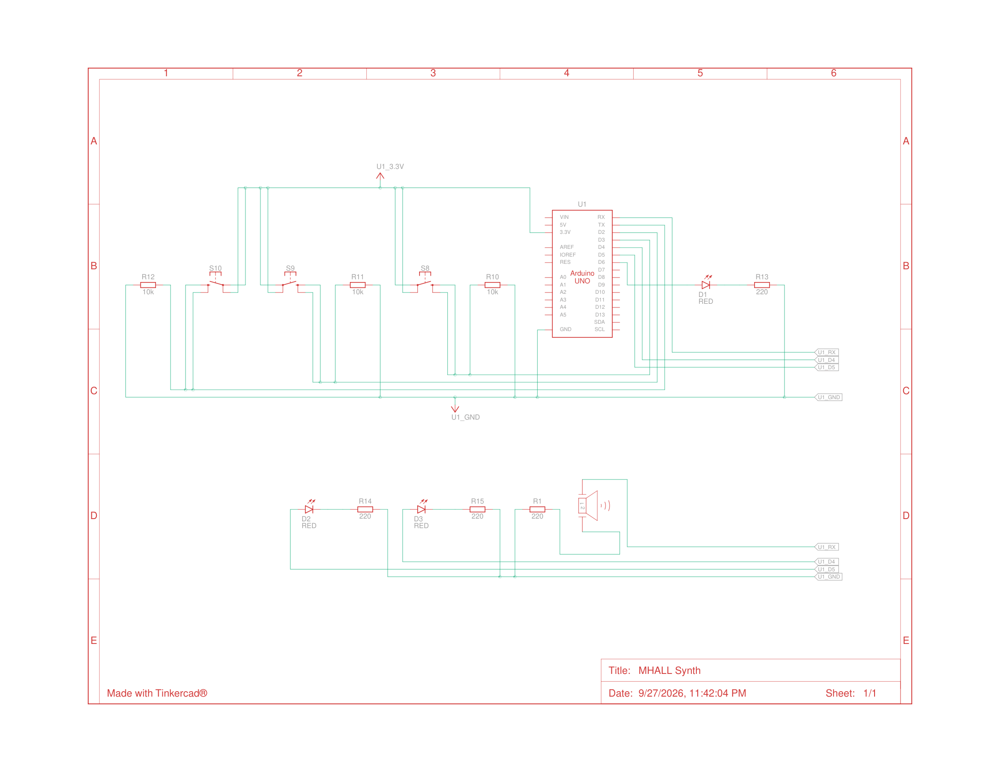
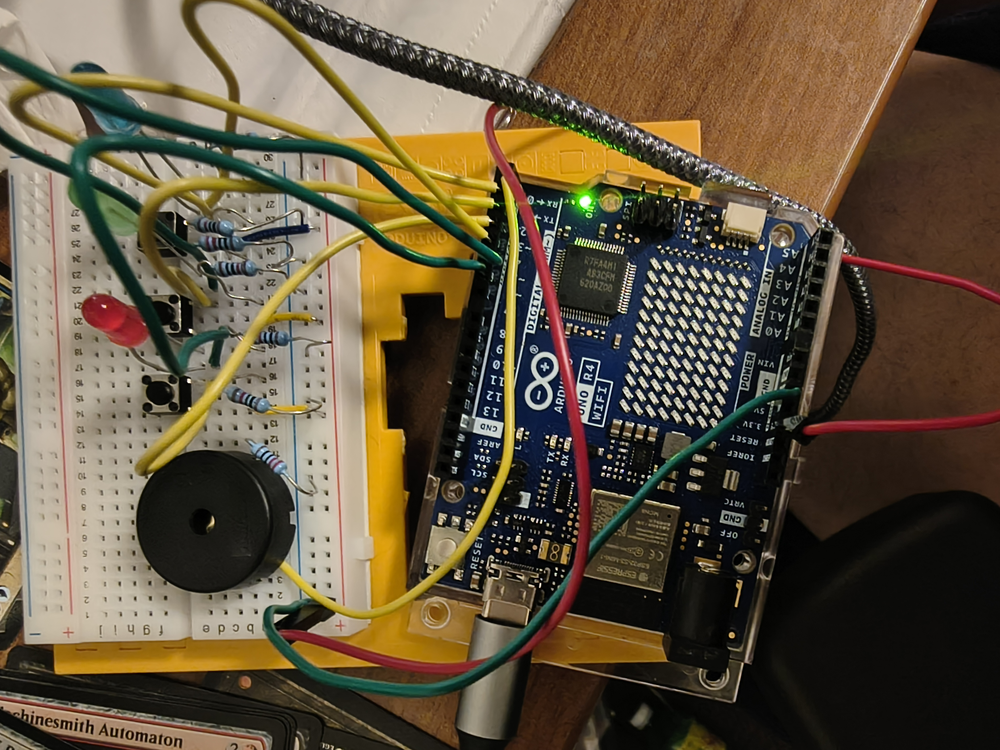

For this demo, I wanted to incorporate a Piezo speaker into my project to make some music.

I was inspired by having to play recorder in elementary school, and wanted to make a simple 3-note synth.

Thus the name "M-HALL" - short for Mary Had A Little Lamb, as that's one of the few playable songs.
The LEDs light up at the same time their respective button's note is played.
To get the respective pitches, I used this link to find the Piezo equivalencies to standard pitches.